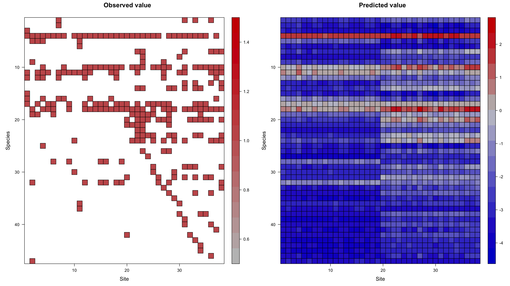
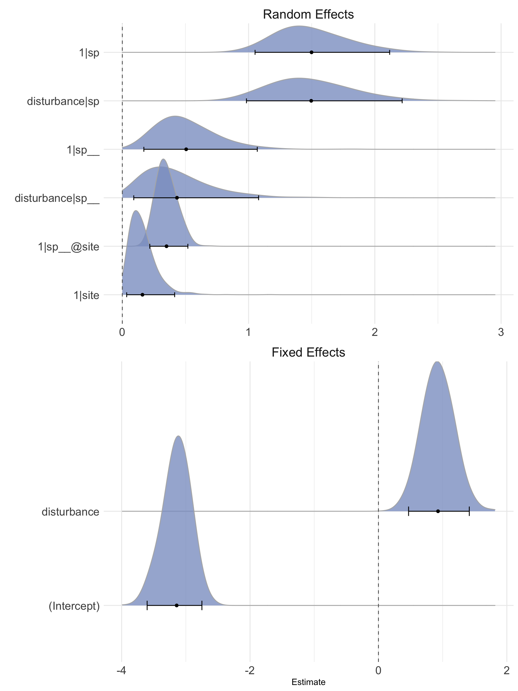
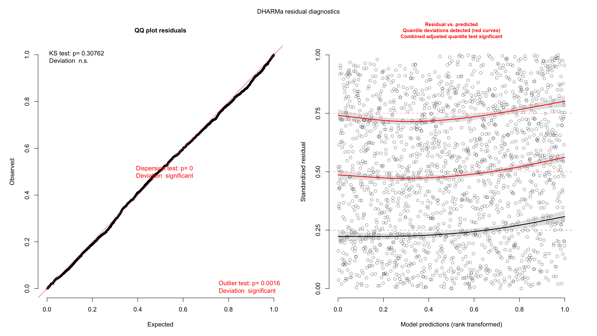
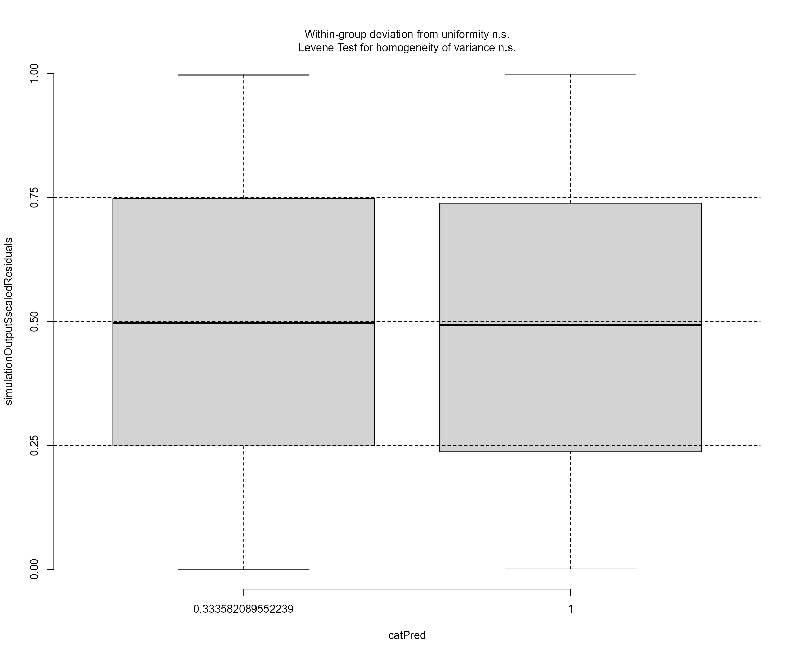
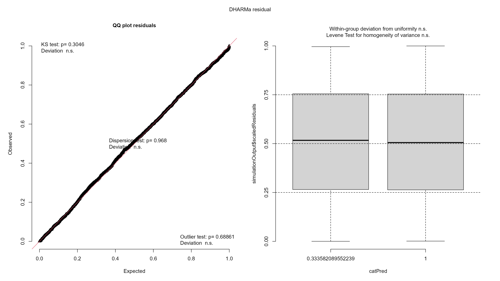
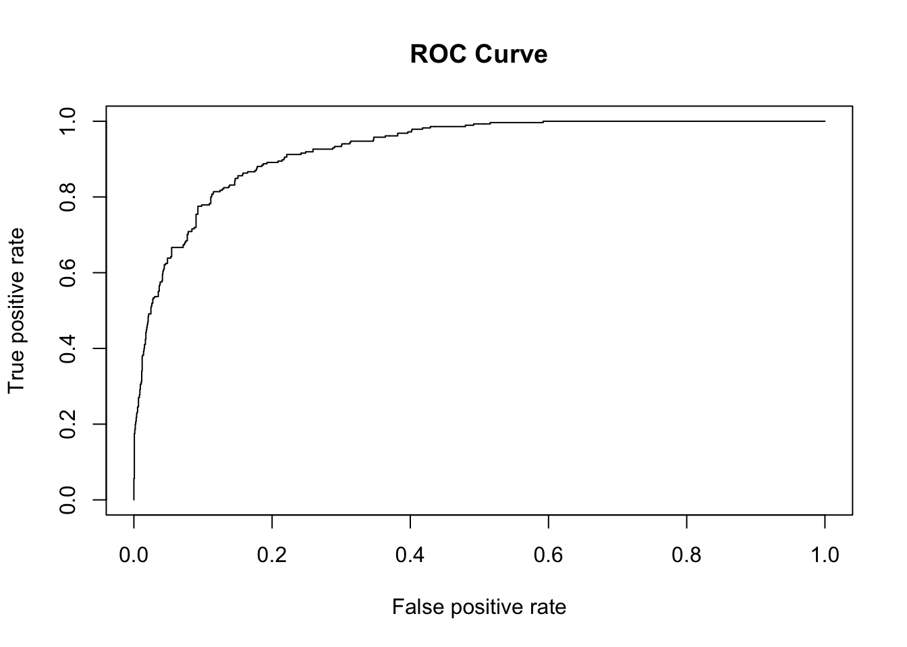
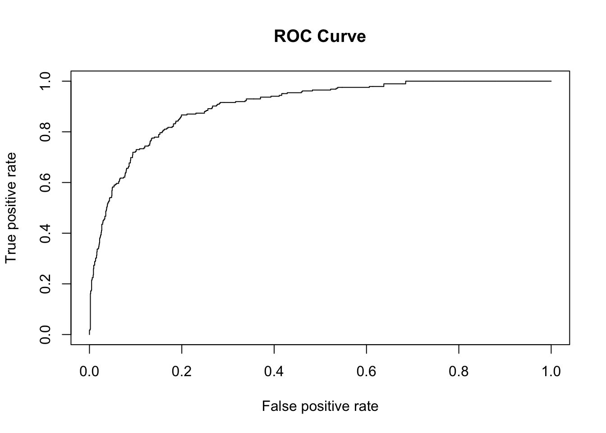

vignettes/phyr_example_empirical.Rmd
phyr_example_empirical.RmdThis vignette will show a complete analysis example for pglmm on a simple empirical dataset. The dataset is taken from Dinnage (2009). Here we will demonstrate how to fit a PGLMM, including main phylogenetic effects, nested phylogenetic effects, as well as including environmental covariates. First let’s load the dataset and take a look at what we have. The data is included in phyr, so we can just call data(oldfield) to load it.
library(phyr) library(ape) library(dplyr) #> #> Attaching package: 'dplyr' #> The following objects are masked from 'package:stats': #> #> filter, lag #> The following objects are masked from 'package:base': #> #> intersect, setdiff, setequal, union data("oldfield")
The data is a list with two elements. The first element is a phylogeny containing 47 species of plants (all herbaceous forbs) that live in old field habitats in Southern Ontario, Canada. Oldfield habitats typically are found in areas that were formerly cultivated but are now abandoned. This is often considered a successional stage between farmland and secondary forest. These data come from plots that had experienced two “treatments”: one set of plots had been disturbed by field ploughing within a few years of sampling, whereas the other set had not been disturbed in this way recently. Let’s have a look at the phylogeny and data.
plot(oldfield$phy)
head(oldfield$data, 40) #> # A tibble: 40 x 7 #> site_orig habitat_type sp abundance disturbance site pres #> <int> <chr> <chr> <int> <dbl> <chr> <int> #> 1 1 undisturbed Daucus_carota 0 0 1_undisturb… 0 #> 2 6 undisturbed Daucus_carota 0 0 6_undisturb… 0 #> 3 7 undisturbed Daucus_carota 0 0 7_undisturb… 0 #> 4 9 undisturbed Daucus_carota 0 0 9_undisturb… 0 #> 5 10 undisturbed Daucus_carota 0 0 10_undistur… 0 #> 6 11 undisturbed Daucus_carota 0 0 11_undistur… 0 #> 7 13 undisturbed Daucus_carota 1 0 13_undistur… 1 #> 8 15 undisturbed Daucus_carota 0 0 15_undistur… 0 #> 9 16 undisturbed Daucus_carota 0 0 16_undistur… 0 #> 10 18 undisturbed Daucus_carota 0 0 18_undistur… 0 #> # … with 30 more rows
With these data we are interested in asking whether there is phylogenetic structure in the distribution of these species, as well as whether disturbance has any overall effects. To do this we will specify two different phylogenetic effects in our pglmm, which uses a syntax similar to lmer and glmer in the lme4 package for specifying random effects. We also include site-level random effects to account for the paired design of the experiment. We will start by modeling just presence and absence of species (a binomial model). Note this model will take a while when using maximum likelihood (the Bayesian method is much faster). This is the full model specification:
mod <- phyr::pglmm(pres ~ disturbance + (1 | sp__) + (1 | site) + (disturbance | sp__) + (1 | sp__@site), data = oldfield$data, cov_ranef = list(sp = oldfield$phy), family = "binomial")
Here, we specified an overall phylogenetic effect using sp__, which also automatically includes a nonphylogenetic i.i.d. effect of species. phyr finds the linked phylogenetic data because we specified the phylogeny in the cov_ranef argument, giving it the name sp which matches sp__ but without the underscores. We can include any number of phylogenies or covariance matrices in this way, allowing us to model multiple sources of covariance in one model. In this example, however, we will stick to one phylogeny to cover the basics of how to run pglmm models. We use the same phylogeny to model a second phylogenetic random effect, which is specified as sp__@site. This is a “nested” phylogenetic effect. This means that we are fitting an effect that had covariance proportional to the species phylogeny, but independently for each site (or “nested” in sites). We’ve also included a disturbance-by-phylogenetic species effect ((disturbance | sp__)), which estimates the degree to which occurrence in disturbed vs. undisturbed habitat has a phylogenetic signal. Like the main sp__ effect, the disturbance-by-sp__ effect also includes an nonphylogenetic species-by-disturbance interaction. Let’s look at the results:
summary(mod) #> Generalized linear mixed model for binomial data fit by restricted maximum likelihood #> #> Call:pres ~ disturbance #> #> #> Random effects: #> Variance Std.Dev #> 1|sp 2.0345532 1.42638 #> 1|sp__ 0.0604946 0.24596 #> 1|site 0.0002416 0.01554 #> disturbance|sp 1.7800044 1.33417 #> disturbance|sp__ 0.0003680 0.01918 #> 1|sp__@site 0.0952042 0.30855 #> #> Fixed effects: #> Value Std.Error Zscore Pvalue #> (Intercept) -2.72421 0.33520 -8.1272 4.393e-16 *** #> disturbance 0.78423 0.28689 2.7336 0.006266 ** #> --- #> Signif. codes: 0 '***' 0.001 '**' 0.01 '*' 0.05 '.' 0.1 ' ' 1
The results of the random effects imply that the strongest effect is an overall nonphylogenetic species effect, followed closely by a disturbance-by-species effect. This implies that species vary strongly in their occurrence in disturbed or undisturbed sites, that there is a clear community difference between these treatments. The next strongest effect is the nested phylogenetic effect. But how can we know if this effect is strong enough to take seriously? Well one way to get an idea is to run a likelihood ratio test on the random effect. This can be achieved by using the pglmm_profile_LRT() function, at least for binomial models.
names(mod$ss) #> [1] "1|sp" "1|sp__" "1|site" "disturbance|sp" #> [5] "disturbance|sp__" "1|sp__@site" test_nested <- phyr::pglmm_profile_LRT(mod, re.number = 6) ## sp__@site is the 6th random effect test_nested #> $LR #> [1] 4.037448 #> #> $df #> [1] 1 #> #> $Pr #> [1] 0.002244134 # alternatively, we can test all random effects LRTs <- sapply(1:6, FUN = function(x) phyr::pglmm_profile_LRT(mod, re.number = x)) colnames(LRTs) <- names(mod$ss) t(LRTs) #> LR df Pr #> 1|sp 54.01487 1 1.323873e-25 #> 1|sp__ 0.2179382 1 0.2545597 #> 1|site -0.002140096 1 1 #> disturbance|sp 15.94218 1 8.18144e-09 #> disturbance|sp__ -0.001094586 1 1 #> 1|sp__@site 4.037448 1 0.002244134
This result shows that the nested phylogenetic effect is statistically significant. What does this mean? A model where the within-site distributions of species are explained by the phylogenetic covariance of species implies a ‘phylogenetic attraction’ or ‘phylogenetic clustering’ effect, in which closely related species are more likely to be found together in the same community. In the original analysis of these data using traditional community phylogenetics methods (null model based) found that the disturbed sites were phylogenetically clustered but undisturbed sites were not. If the data are split in this way, and each split modeled separately, does this result hold up?
mod_disturbed <- phyr::pglmm(pres ~ (1 | sp__) + (1 | sp__@site) + (1 | site), data = oldfield$data %>% dplyr::filter(disturbance == 1), cov_ranef = list(sp = oldfield$phy), family = "binomial") mod_undisturbed <- phyr::pglmm(pres ~ (1 | sp__) + (1 | sp__@site) + (1 | site), data = oldfield$data %>% dplyr::filter(disturbance == 0), cov_ranef = list(sp = oldfield$phy), family = "binomial")
cat("Disturbed phylogenetic clustering test:\n") #> Disturbed phylogenetic clustering test: phyr::pglmm_profile_LRT(mod_disturbed, re.number = 4) #> $LR #> [1] 4.680287 #> #> $df #> [1] 1 #> #> $Pr #> [1] 0.001108513 cat("Undisturbed phylogenetic clustering test:\n") #> Undisturbed phylogenetic clustering test: phyr::pglmm_profile_LRT(mod_undisturbed, re.number = 4) #> $LR #> [1] -9.778164e-06 #> #> $df #> [1] 1 #> #> $Pr #> [1] 1
Indeed! The original results hold up to this model-based test of the same question. Whew! (╹◡╹)凸 We can also get an idea of how well the model fits the data by plotting the observed and predicted values of the model side-by-side.
plot_data(mod, predicted = TRUE)

The other result from this model is that there is a strong fixed effect of disturbance. In the context of a binomial multivariate model such as pglmm, this means there is an overall increase in the probability of occurrence in disturbed sites. In other words, disturbed sites have a higher species richness at the site level (noting that expected alpha species richness of a site can be expressed as Gamma richness * E(prob_site(occurrence))).
Another way to explore the random effects is to use the Bayesian version of pglmm and then look at the shape of the posterior distribution of our random effect variance terms.
mod_bayes <- phyr::pglmm(pres ~ disturbance + (1 | sp__) + (1 | site) + (disturbance | sp__) + (1 | sp__@site), data = oldfield$data, cov_ranef = list(sp = oldfield$phy), family = "binomial", bayes = TRUE, prior = "pc.prior.auto") summary(mod_bayes) #> Generalized linear mixed model for binomial data fit by Bayesian INLA #> #> Call:pres ~ disturbance #> #> marginal logLik DIC WAIC #> -618.1 1074.6 1073.0 #> #> Random effects: #> Variance Std.Dev lower.CI upper.CI #> 1|sp 2.06397 1.43665 1.115149 4.3922 #> 1|sp__ 0.13445 0.36667 0.029487 1.2275 #> 1|site 0.00784 0.08854 0.001349 0.1716 #> disturbance|sp 1.98071 1.40738 0.975676 5.0745 #> disturbance|sp__ 0.05070 0.22516 0.008501 1.2620 #> 1|sp__@site 0.10266 0.32040 0.043477 0.2815 #> #> Fixed effects: #> Value lower.CI upper.CI #> (Intercept) -3.14632 -3.60301 -2.7409 #> disturbance 0.92515 0.44044 1.4308
“pc.prior.auto” is a good choice to generate priors for binomial models. If you are interested in the details of this kind of prior (known as a penalizing complexity prior), check out this paper: https://arxiv.org/abs/1403.4630.
The results of this model are consistent with the ML model, which is good to see. Now we also have lower and upper credible intervals. We can look at the full approximate marginal posterior distributions of the random effects and fixed effects with the plot_bayes function.
plot_bayes(mod_bayes, sort = TRUE)

What we are looking for is that the posterior distribution mode is well away from zero, and that it looks relatively symmetrical. If it were skewed and crammed up against the left side of the plot, near zero, we would conclude that the effect is weak (remembering that variance components cannot be less than or equal zero, so there will always be some positive probability mass). The most obvious effects (well away from zero) are again the species random effect, the species-by-disturbance random effect, and the nested phylogenetic effect. In this plot, the 95% credible interval is also plotted, along with the posterior mean (the point and bar at the bottom of each density). For the random effects these aren’t too meaningful, but they can help distinguish genuine effects in the fixed effects. If these credible intervals overlap zero in the fixed effects, the density will be plotted with a lighter color to suggest it is not a strong effect (although this is not relevant for this dataset, because both fixed effects are strong).
The next thing we might want to check is whether assumptions of the model are met by the data. The typical way to do this is by plotting and/or analyzing the model residuals. In non-Gaussian models such as this one, this can be less straightforward. However, phyr output supports the DHARMa package, which can generated a generalized type of residual known as randomized quantile residuals (or sometimes Dunn-Smyth residuals). These can be calculated and inspected for nearly any error distribution. We can produce standard diagnostic plots for our pglmm model by simply calling DHARMa::simulateResiduals on the model object.
resids <- DHARMa::simulateResiduals(mod_bayes, plot = FALSE) #> Warning in checkModel(fittedModel): DHARMa: fittedModel not in class of #> supported models. Absolutely no guarantee that this will work! plot(resids)

The residual plots look pretty good, though some of the tests failed. Specifically the residual quantiles are not quite as flat with respect to the model predictions as we would like them to be. There is a slight curvature, and the residuals are overall increasing slightly with higher predictions. Visually, however, this looks like a weak effect, and for large datasets such as this, it is easy for the tests to fail. Thus, it is likely that the statistical inference we get from the model is pretty good. Given that we are interested in the effect of disturbance, we may also want to check that the residuals do not show any strong patterns with the disturbance treatment. This is simple to do with DHARMa as follows:
DHARMa::plotResiduals(resids, mod_bayes$data$disturbance)

Obviously no problems there. This is also the case for the model fitted by Maximum Likelihood method (mod).
resids_mod <- DHARMa::simulateResiduals(mod, plot = FALSE) #> Warning in checkModel(fittedModel): DHARMa: fittedModel not in class of #> supported models. Absolutely no guarantee that this will work! plot(resids_mod)

Another question about our model is simply how well it fits the data. A metric appealing in its simplicity is the classic R2 metric, which purports to estimate the proportion of the variance in the response explained by the model predictors. Once again, though, when using non-Gaussian errors this can become a bit tricky. An additional complication is created by model with random effects. Given that random effects are very flexible model components (for example, nothing stops you from fitting a random effect for each observation in your dataset), a straight-up calculation of variance explains isn’t meaningful. That said, methods that can produce a useful R2 metric in the complex situation have been developed. The package rr2 is able to calculate several flavors of R2, and supports phyr’s pglmm model object. Let’s try it!
rr2::R2(mod) #> Models of class communityPGLMM (binomial) only have R2.pred method. #> R2_pred #> 0.4444387 rr2::R2(mod_bayes) #> Models of class communityPGLMM (binomial) only have R2.pred method. #> R2_pred #> 0.4577095
There we go! R2 = 0.44 for mod and R2 = 0.46 for mod_bayes! We can think of this as saying roughly 44% (or 46%) of our response’s variance has been explained by our model, taking into account the various sources of covariance we modeled, subject to a boatload of assumption and caveats of course. That’s handy! See Ives (2018) for the full description of how this R2 works.
Assessments of predictive accuracy of Species Distribution Models are generally based on confusion matrices that record the numbers of true positive, false positive, true negative, and false negative. Such matrices are straightforward to construct for models providing presence-absence predictions, which is true for most SDMs. Commonly used measures for SDMs include Specificity (true negative rate), Sensitivity (true positive rate), True Skill Statistic (TSS = Sensitivity + Specificity - 1), and area under the receiver operating characteristic (ROC) curve (AUC) (Allouche et al. 2006). Combining the observed values with the predictions generated by the pglmm_predicted_values() function, we can calculate such measures to evaluate the performance of our models.
pred_mod = phyr::pglmm_predicted_values(mod)$Y_hat obs_mod = mod$data$pres roc_mod <- pROC::roc(obs_mod, pred_mod, percent = T, direction = "<", levels = c(0,1)) (AUC = pROC::auc(roc_mod)) #> Area under the curve: 92.74% (roc_mod_2 <- pROC::coords(roc_mod, "best", ret = c("sens", "spec"), transpose = F) / 100) #> sensitivity specificity #> 1 0.8561404 0.8494337 (TSS = roc_mod_2[1, "sensitivity"] + roc_mod_2[1, "specificity"] - 1) #> [1] 0.7055741 plot(ROCR::performance(ROCR::prediction(pred_mod, obs_mod), measure = "tpr", x.measure = "fpr"), main = "ROC Curve") # ROC curve

We can see that the AUC is pretty high (0.9273677) with the model fitted with maximum likelihood framework (mod). True positive rates and true negative rates are also both reasonably high. What about the model fitted with Bayesian framework (mod_bayes)? Not surprising, the results are similar to those of mod.
pred_mod_bayes = phyr::pglmm_predicted_values(mod_bayes)$Y_hat obs_mod_bayes = mod_bayes$data$pres roc_mod_bayes <- pROC::roc(obs_mod_bayes, pred_mod_bayes, percent = T, direction = "<", levels = c(0,1)) (AUC_bayes = pROC::auc(roc_mod_bayes)) #> Area under the curve: 93.25% (roc_mod_bayes2 <- pROC::coords(roc_mod_bayes, "best", ret = c("sens", "spec"), transpose = F) / 100) #> sensitivity specificity #> 1 0.877193 0.8387742 (TSS_bayes = roc_mod_bayes2[1, "sensitivity"] + roc_mod_bayes2[1, "specificity"] - 1) #> [1] 0.7159671 plot(ROCR::performance(ROCR::prediction(pred_mod_bayes, obs_mod_bayes), measure = "tpr", x.measure = "fpr"), main = "ROC Curve") # ROC curve
Now let’s compare the model that does not account for phylogenetic relationships, that is, the regular joint species distribution models.
mod_bayes_no_phy <- phyr::pglmm(pres ~ disturbance + (1 | sp) + (1 | site) + (disturbance | sp), data = oldfield$data, family = "binomial", bayes = T, prior = "pc.prior.auto") pred_mod_bayes_no_phy = phyr::pglmm_predicted_values(mod_bayes_no_phy)$Y_hat obs_mod_bayes_no_phy = mod_bayes_no_phy$data$pres roc_mod_bayes_no_phy <- pROC::roc(obs_mod_bayes_no_phy, pred_mod_bayes_no_phy, percent = T, direction = "<", levels = c(0,1)) (AUC_bayes_no_phy = pROC::auc(roc_mod_bayes_no_phy)) #> Area under the curve: 90.26% (roc_mod_bayes_no_phy2 <- pROC::coords(roc_mod_bayes_no_phy, "best", ret = c("sens", "spec"), transpose = F) / 100) #> sensitivity specificity #> 1 0.8666667 0.8007995 (TSS_bayes_no_phy = roc_mod_bayes_no_phy2[1, "sensitivity"] + roc_mod_bayes_no_phy2[1, "specificity"] - 1) #> [1] 0.6674661 plot(ROCR::performance(ROCR::prediction(pred_mod_bayes_no_phy, obs_mod_bayes_no_phy), measure = "tpr", x.measure = "fpr"), main = "ROC Curve") # ROC curve

Including species’ phylogenetic relationships in the model indeed improved the model performance. After dropping the phylogenetic random terms from the model, AUC decreased from 0.9325 to 0.9026 and TSS decreased from 0.716 to 0.6675.